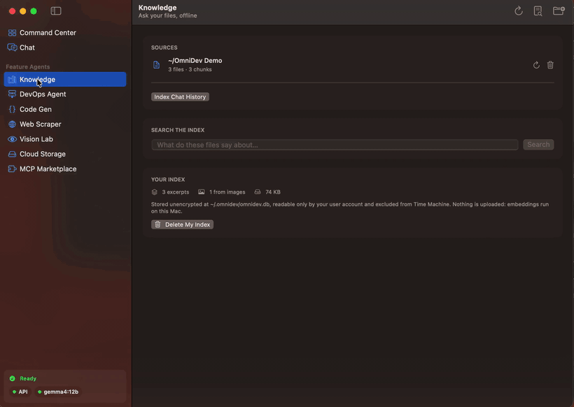
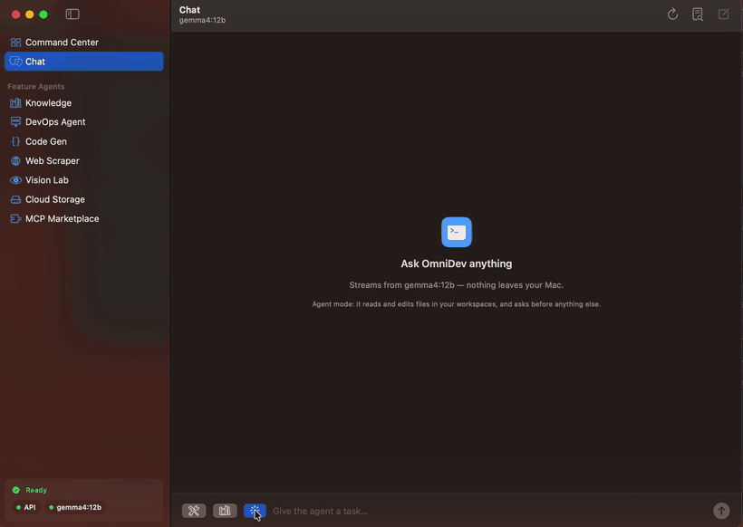

Ask your Mac anything, and let it do the work. Fully offline.
A native macOS app. A local Gemma 4 model reads your files, including your screenshots, answers with citations, and can edit code and run your tests. Nothing leaves your machine: no account, no API key, no bill.
Free and MIT licensed. Apple silicon and Intel. Builds are unsigned, so the first launch needs right click then Open.
Reproduced from the recorded probe in docs/probes. The 0.82 score is the
measured one, from a run where a screenshot outranked a decoy document. The file names and the
decoy's own score are illustrative. The refusal is real: .env is on a denylist that is checked before the
file is ever opened.
It reads what you actually have.
Point it at your Desktop, Documents and Downloads. Notes, PDFs, Office and iWork documents, code, and screenshots: every image is read with on device OCR at roughly 42 ms each, so text that only ever existed inside a picture is searchable like everything else. Retrieval fuses keyword and vector search, because a vector alone misses an exact invoice number.

.env file sitting in the same folder was refused, not
indexed. The wait for the local model is sped up; everything else is real time.
Give it a task instead of a question.
Agent mode reads, edits, runs your tests and reports back, asking permission before it touches anything outside the folders you trust. It stops after 15 steps, and every file it changes is snapshotted first and restorable by id.

It cannot delete your work.
There is no delete tool, and the shell cannot stand in for one. These are refused by name, with an explanation, even inside a folder you trust.
Overwriting a file that already has contents counts as destruction and asks first, naming how many lines are about to be lost. Creating a new file stays friction free.
It will never index your secrets.
The index stores plaintext excerpts, so some things are refused outright and cannot be enabled. This holds even when you add a folder above them.
- .env
- *.pem
- *.key
- id_rsa*
- *.kdbx
- .netrc
- .npmrc
- .git-credentials
- .zsh_history
- ~/Library
- .ssh
- .gnupg
- .aws
- .kube
- Keychains
- 1Password
- Bitwarden
- KeePass
- Safari
- Chrome
- Firefox
- Arc
- Never phones home. Embeddings and generation run on your machine. No telemetry, no account, and this page loads no third party font, script or analytics.
- Never hangs on iCloud. Files stored in the cloud with no local copy are skipped and counted, never silently downloaded, because reading one can block forever.
- Never leaves the index readable. It is created
0600, kept out of Time Machine, and Delete My Index erases everything in one click. - Serves your other tools. An MCP server exposes the same local index and model to Claude Code, Claude Desktop and Cursor, still fully offline.
Measured, not promised.
- Default modelgemma4:12b, 7.6 GB
- Context window256K tokens
- OCR per image42 ms warm median
- RetrievalBM25 + dense, fused by RRF
- Agent step ceiling15
- Index file mode0600
- Backend test suite322 passing
- Recommended memory16 GB, lighter model at 8 GB
- Account requirednone
- Price0, MIT licensed
OCR timing is the warm median over 12 runs on an M series Mac, 647 ms on the first call while the Vision models load. Needs Ollama for the local model; onboarding pulls it for you.
Ask it something your cloud tools are not allowed to see.
Download it, point it at a folder, turn off your wifi and try again.